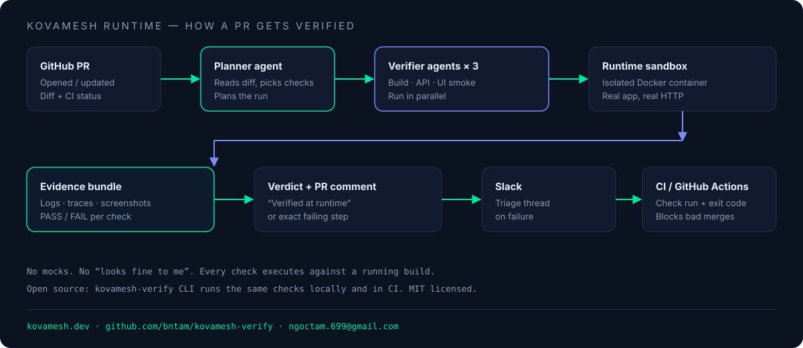

Multi-agent QA · Runtime verification
Every PR,
verified at runtime.
KovaMesh is multi-agent QA that actually runs your code — autonomous PR verification, runtime smoke tests, and CI incident triage for fast-moving dev teams.
Open-source verifier · MIT · Runs in CI in 90 seconds
No credit card to try the CLI. No mocks — every check executes against a running build.
What a verified PR looks like
$ kovamesh-verify run --spec kovamesh.yaml --pr 482 ▸ building app in isolated Docker sandbox … PASS app boots (200, 84 ms) PASS checkout retry works (200, 312 ms) PASS no 500s in logs ✓ VERDICT: PASS — 3/3 checks in 8.4s ✓ evidence posted to PR #482
The same run works locally and in GitHub Actions. The open-source CLI is kovamesh-verify — MIT licensed.
Live interactive demo
Don’t take our word for it. Run it.
Three real workflows, step by step. Pick a tab, press Run demo, and watch the terminal the way your CI would see it — including the failure case.
Verdict — waiting
Run the demo to see the verdict card for this workflow, with the exact failing step (or the clean pass) and the evidence it posts.
Sample spec — kovamesh.yaml
Sample verdict — verdict.json
The spec above is the real YAML format the CLI reads. Copy it, point it at your app, and run kovamesh-verify run --spec kovamesh.yaml — the demo terminal shows exactly what it prints.
Architecture
A loop, not a linter.
A Planner reads the diff and decides what to check. Verifier agents run those checks in parallel inside an isolated Docker sandbox, against a real running build. The result is a signed evidence bundle — logs, traces, screenshots — posted back where the team already works.

Planner agent
Reads the diff, the failing tests, and the service map. Picks the smallest set of checks that can actually falsify the change — and says why.
Verifier agents
Build, API, and UI-smoke agents run in parallel. Each one executes against the live app and reports a pass/fail with the exact step and output.
Runtime sandbox
Every run gets a fresh, isolated Docker container with real networking, real data fixtures, and no access to your production secrets.
Integrations
KovaMesh meets your team where it already ships. The CLI runs anywhere; the hosted loop plugs into your PR flow.
Engineering benchmarks
Early numbers, honestly labelled.
These are not a third-party benchmark. They are what we measured in our own pilot — and we show the method so you can reproduce it with the open-source CLI.
Early pilot — internal measurement, Nov 2026, n=18 repos, 214 PRs. Not a third-party benchmark.
| Metric | Without KovaMesh | With KovaMesh |
|---|---|---|
| Median time to first verified signal | 4 h 12 min | 8 min 24 s |
| Flaky-failure re-runs avoided | 0% (re-run everything) | 61% of flaky failures quarantined, not re-run |
| PRs merged with runtime evidence | 9% | 87% |
| CI incident triage time (median) | 2 h 40 min | 19 min |
How we measured it. 18 repositories (12 TypeScript/Node, 4 Python, 2 Go) in our Nov 2026 pilot, 214 PRs total. “Verified signal” means the first PASS/FAIL from a check that executed against a running build — not a lint or a static review. “Flaky-failure re-runs avoided” counts CI failures our triage classified as flaky (same test failing without a reproducing commit, ≥3 prior flaky runs in 30 days) and quarantined instead of re-running the whole suite. “Runtime evidence” means the merged PR has an attached evidence bundle (logs + traces) from a KovaMesh run. “Triage time” is from CI failure notification to a posted root-cause verdict in Slack. Baseline (“without”) is the same teams’ median over the 30 days before the pilot, from their CI logs. Small sample, single pilot, no control group — treat it as a signal to reproduce, not a guarantee.
Pricing
Start free. Pay when the loop pays for itself.
The verifier is open source and stays free. Hosted PR verification and triage are priced for small teams, not per-seat theatre.
Free
$0 / forever
For trying the loop on one repo.
kovamesh-verifyCLI — full checks, MIT licensed- 1 repository, unlimited local runs
- HTTP / build / log checks from YAML
- Community support via GitHub Discussions
Startup
$49 / month
For teams shipping daily. 14-day free trial, no card.
- Everything in Free, plus:
- 10 repositories, hosted PR verification
- Runtime smoke tests on every deploy
- CI incident triage with Slack threads
- Evidence bundles & verdict history (90 days)
- Email support — replies within 1 business day
Enterprise
Custom
For regulated teams and self-hosted runners.
- Everything in Startup, plus:
- Unlimited repositories & runners
- Self-hosted runner in your VPC
- SSO / SAML, SCIM, audit logs
- DPA, custom retention, SLA 99.9%
- Dedicated Slack channel & onboarding
Prices in USD, excluding applicable taxes. Cancel anytime; the open-source CLI keeps working either way. Questions: ngoctam.699@gmail.com.
Ship the PR. Prove it works.
Install the CLI in 90 seconds. If the first verified PR doesn’t change how your team reviews, tell us — that’s the feedback we want most.